📌 Chapter snapshot
- Chapter 9 of NCERT Curiosity, Science textbook for Grade 8 (reprint 2026-27): sections 9.1 to 9.5, 7 activities, Tables 9.1 and 9.2 and 12 end-of-chapter questions.
- Two big ideas: (1) Solute + Solvent → Solution, and every solvent can hold only a limited amount of solute (solubility). (2) Density = Mass ÷ Volume, which helps explain why things float or sink.
- Most-asked in school exams (CBSE pattern): saturated vs unsaturated, dilute vs concentrated, effect of temperature on solubility of solids and gases, density numericals (find density, mass or volume), reading a measuring cylinder and the meniscus, volume by displacement, why ice floats.
- New words: uniform mixture, non-uniform mixture, solution, solute, solvent, saturated, unsaturated, concentration, dilute, concentrated, solubility, density, relative density, balance, tare, measuring cylinder, meniscus, displacement.
🧪 8 live labs in this page (tap to jump)
Plus a density calculator, unit converter, density ladder and a frozen-lake slider. Everything works on a phone.
Video lesson: Solutes, Solvents and Solutions
A 7-minute animated lesson with narration and subtitles. Tap a topic to jump to it.
Can't play it here? 🔒 Download the video (MP4) with the PIN from MT Classes and watch it offline.
Probe and ponder
Look at the chapter opener. People have gathered on a seashore and are picking up something white from the sand. This is the famous Salt March (Dandi, 1930): Mahatma Gandhi made salt from seawater to protest against the British salt tax. Seawater is a solution of salt in water. When the sun evaporates the water, the salt is left behind.
🤔 Probe and ponder (page 134), answered
- What is happening in the picture? People are collecting salt left on the shore after seawater dried up. Salt was dissolved in seawater (a solution); the sun evaporated the water (the solvent), and solid salt (the solute) remained.
- Too much sugar in tea and it stops dissolving. How can you solve this? The tea has become saturated with sugar. Either heat it (hot tea dissolves more sugar) or add more tea/water (more solvent can hold more solute) and stir.
- Why do sugar and salt dissolve in water but not in oil? Why is water a good solvent? Water particles pull strongly on salt and sugar particles and carry them away into the liquid; oil particles do not. Water dissolves more substances than any other common liquid, so it is often called a universal solvent. That is why our blood, sap in plants, ORS and seawater are all water solutions.
- Why are water bottles tall and cylindrical, not spherical? A cylinder stands steady, is easy to grip and pour from, fits in bag pockets and fridge doors, and many cylinders pack side by side with little wasted space. A sphere would roll away and waste space. (You will also see why measuring cylinders are tall and narrow in 9.5.1.)
Why every sip of ORS tastes the same
When you are ill with loose motions, you drink ORS (Oral Rehydration Solution): sugar + salt + water. Every sip tastes the same, never salty in one sip and sweet in the next. Why? Because sugar and salt spread out evenly in the water.
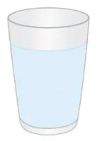
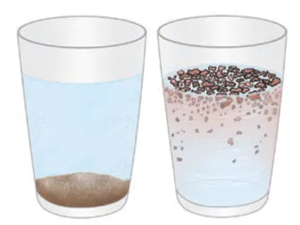
Uniform mixture
Non-uniform mixture
🥄 Live lab: Watch it dissolve
Pick something, drop it into the water and press Stir. Watch where the particles go.
Let us now learn the scientist's words for this mixing.
What are solute, solvent and solution?
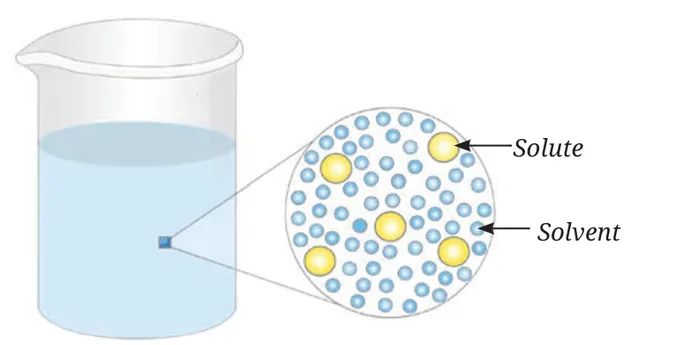
- Salt water: salt = solute, water = solvent.
- Sugar syrup: sugar = solute, water = solvent.
- ORS: sugar and salt = solutes (a solution can have more than one solute), water = solvent.
- Two liquids mixed (like a little acetic acid in water, which is vinegar): the one in smaller amount is the solute, the one in larger amount is the solvent.
🧠 Kid-friendly way to remember
SOLVENT has a V like a big Vessel that holds things. SOLUTE is the "luttle" thing that goes into it. The solvent is the host; the solute is the guest; the solution is the party where everyone mixes evenly.
🤔 We know air is a mixture. Would a mixture of gases also be a solution?
Yes. Gases mix completely and evenly, so air is a uniform mixture, a gaseous solution. Nitrogen (about 78%) is present in the largest amount, so it acts as the solvent; oxygen, argon, carbon dioxide and others are the solutes. Solutions can be solid (alloys like brass), liquid (salt water) or gas (air).
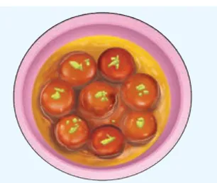
Ever heard of… Chashni?
The chashni (sugar syrup) of gulab jamun has a lot of sugar in a little water. Even then, water is the solvent and sugar is the solute! Rule: when a solid dissolves in a liquid, the liquid is always the solvent, whatever the amounts. The "smaller amount = solute" rule is only for liquid + liquid.
| Solution | Solute | Solvent | Type |
|---|---|---|---|
| Salt water / seawater | Salt | Water | Solid in liquid |
| Sugar syrup (chashni) | Sugar | Water | Solid in liquid |
| ORS | Sugar + salt | Water | Solid in liquid |
| Soda water | Carbon dioxide | Water | Gas in liquid |
| Pond water for fish | Oxygen | Water | Gas in liquid |
| Vinegar | Acetic acid | Water | Liquid in liquid |
| Air | Oxygen, argon, CO2… | Nitrogen | Gas in gas |
| Brass (alloy) | Zinc | Copper | Solid in solid |
How much solute can a solvent dissolve?
Activity 9.1: Keep adding salt
- Half-fill a clean glass tumbler with water.
- Add one spoon of salt and stir till it dissolves completely.
- Keep adding one spoon at a time, stirring each time, and count the spoons until salt stops dissolving.
- Record your observations in Table 9.1.
Table 9.1 completed: dissolution of salt in water (about 100 mL, room temperature)
| Salt taken (teaspoons) | Observation |
|---|---|
| One | Dissolves completely |
| Two | Dissolves completely |
| Three | Dissolves completely |
| Four | Dissolves completely |
| Five | Dissolves, but slowly |
| Six | Dissolves only after long stirring |
| Seven | Does not dissolve: some salt stays at the bottom |
Your exact number of spoons may differ (spoon size, amount of water, temperature). About 36 g of salt dissolves in 100 mL of water at room temperature, which is about 6 level teaspoons.
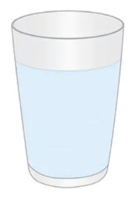
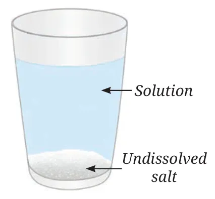
Unsaturated solution "still hungry"
More solute can still dissolve in it at that temperature. All the salt has disappeared.
Saturated solution "full stomach"
No more solute can dissolve at that temperature. Extra solute settles at the bottom.
🧠 Think of a sponge
A dry sponge soaks up water (unsaturated). After a point it cannot hold any more; extra water drips out (saturated). A bigger sponge (more solvent) or a warmer one (higher temperature, for most solids) can hold more.
Concentration: dilute and concentrated
🤔 Reflect: 2 spoons of salt in 100 mL, or 4 spoons in 50 mL?
Make the water the same. 4 spoons in 50 mL = 8 spoons in 100 mL. Compare with 2 spoons in 100 mL. So 4 spoons in 50 mL is 4 times more concentrated. Try more in the comparer below.
🥤 Live lab: Concentration Comparer
Change the spoons of sugar and the water in each glass. Darker colour = more concentrated.
🧂 Live lab: Dissolving Lab (Activities 9.1 and 9.2)
Add spoons, stir, and watch for the moment it becomes saturated. Then heat it up with the spirit lamp and see what happens to the leftover solid.
| Spoon | Observation |
|---|---|
| Your Table 9.1 fills in here. | |
Spoon sizes used: salt 6 g, baking soda 5 g, sugar 4 g. Solubility values are approximate textbook-level values.
Does temperature change solubility?
Activity 9.2: Baking soda in warm water (demonstration)
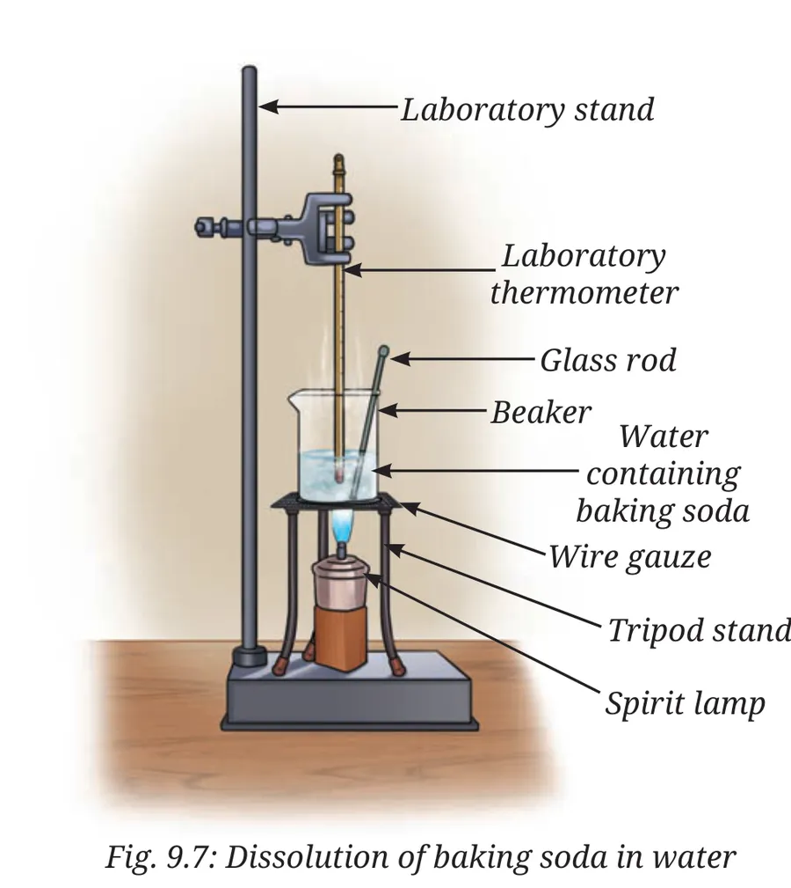
- Take about 50 mL water in a beaker. Measure its temperature, say 20 °C.
- Add baking soda (sodium hydrogen carbonate) bit by bit while stirring, until some stays undissolved (saturated at 20 °C).
- Heat to 50 °C while stirring: the undissolved baking soda dissolves.
- Add more till some stays undissolved again. Heat to 70 °C: it dissolves again!
- Inference: water at 70 °C dissolves more baking soda than at 50 °C, and at 20 °C it dissolves the least.
⚠️ Safety first
Be careful while using the heating device. Hold hot beakers with tongs, and keep hair and clothes away from the flame.
Where you see this at home
- Sugar dissolves faster and in larger amounts in hot tea or milk than in cold sharbat.
- Chashni is made by boiling sugar with water.
- When hot chashni cools, sugar crystals sometimes appear: cold water can hold less sugar.
🇮🇳 Our scientific heritage
In Ayurveda, Siddha and other traditional Indian systems of medicine, water was the main solvent for preparing medicines. Medicines were also made using hydro-alcoholic extracts of herbs, and oils, ghee and milk were used as solvents to get the full benefit of the drug.
Be a scientist: Asima Chatterjee
She is famous for developing anti-epileptic and anti-malarial drugs from medicinal plants. She used solvents and solutions to extract and separate useful compounds from plants. She was the second Indian woman to earn a Doctorate of Science (after Janaki Ammal), the first woman to receive the Shanti Swarup Bhatnagar Award in chemical science, and was honoured with the Padma Bhushan.
Solubility of gases
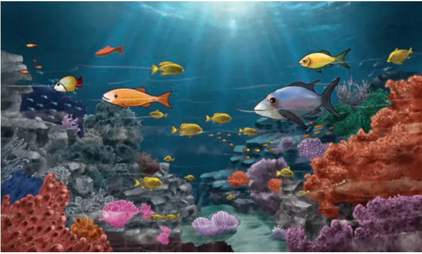
Gases dissolve in water too. Oxygen dissolves only a little, but this dissolved oxygen keeps all water life alive: fish, water plants and tiny organisms. Oxygen dissolved in water forms a uniform mixture (a solution).
| Solids (salt, sugar, baking soda) | Gases (oxygen, carbon dioxide) | |
|---|---|---|
| Temperature goes up | Solubility increases ⬆ | Solubility decreases ⬇ |
| Everyday proof | Sugar dissolves more in hot tea | A warm soda bottle fizzes more (gas escapes) than a cold one |
🐟 Live lab: Fish Tank Oxygen
Slide the water temperature. Count the oxygen bubbles and watch the fish.
Why this matters near Motihari
In hot summer afternoons, the water of ponds and lakes like Moti Jheel becomes warm and holds less oxygen. Fish come up to the surface to gulp air, and in very hot, still ponds some fish can even die. Fish farmers run aerators or add fresh water to put more oxygen back.
🤔 Now I understand…
Mixtures are of two types. Uniform mixtures are solutions: their parts cannot be seen. In non-uniform mixtures we can see the parts with the eye or a magnifier. But why does sawdust float while sand sinks? That is the next question.
Why do objects float or sink in water?
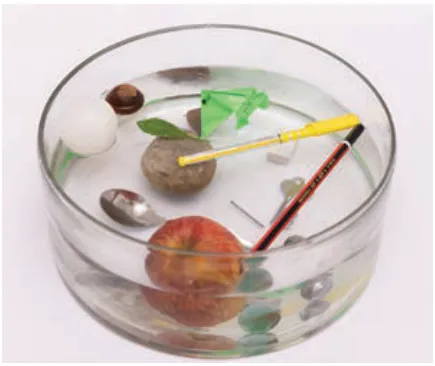
When you wash rice, the light husk floats while rice sinks. Oil poured on water floats. People often say "light things float, heavy things sink". But a huge wooden log floats while a tiny iron nail sinks! So it is not just "heavy" or "light".
A wooden stick and an iron rod of the same size: the iron rod is much heavier. Iron is "heavier for its size". Scientists call this property density.
Note
Density is not the only thing that decides floating or sinking (shape also matters: a steel ship floats because it is hollow and holds a lot of air). But density is the key idea for a solid lump in a liquid.
What is density?
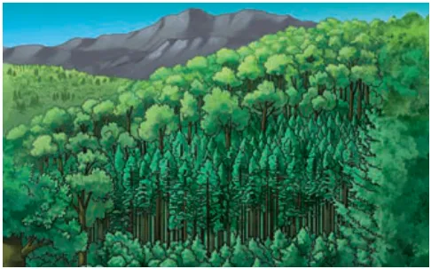
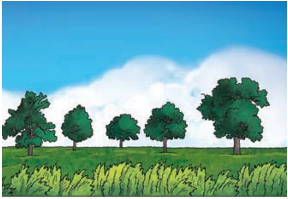
A crowded bus with people packed together has high density; the same bus with a few people has low density. A dense forest has trees close together. In science, density compares how much matter (mass) is packed into how much space (volume).
🚌 Live mini-lab: Pack the box
Same box (same volume). Add particles of the same kind to increase the mass and see the density go up.
Three facts about density
- Does not depend on shape or size. A small iron nail and a big iron rod have the same density (7.9 g/cm³). Cut a cake into pieces: each piece has the same density.
- Depends on temperature (heating usually lowers density) and pressure (mainly for gases).
- Pressure has almost no effect on the density of solids and liquids.
Units of density
| Mass unit | Volume unit | Density unit | Used for |
|---|---|---|---|
| kilogram (kg) | cubic metre (m³) | kg/m³ (SI unit) | Science, big objects, gases |
| gram (g) | millilitre (mL) | g/mL | Liquids in the lab |
| gram (g) | cubic centimetre (cm³) | g/cm³ | Solids and liquids |
🧮 Water's handy number
At room temperature, 1 mL of water has a mass of about 1 g. So 10 mL water ≈ 10 g, 100 mL ≈ 100 g, 1 L ≈ 1 kg. Water's density ≈ 1 g/mL.
Worked example from the book: aluminium
Mass of aluminium block = 27 g; volume = 10 cm³.
Density = 27 g ÷ 10 cm³ = 2.7 g/cm³
Aluminium is 2.7 times denser than water. We say its relative density (with respect to water) is 2.7.
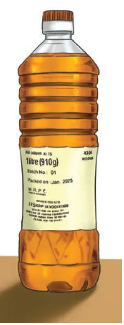
Think like a scientist: 1 litre of oil weighs only 910 g?
1 litre = 1000 mL. Density of oil = 910 g ÷ 1000 mL = 0.91 g/mL. Water is about 1 g/mL. So oil is less dense than water (relative density 0.91). That is why oil floats on water, and why 1 L of oil weighs less than 1 L of water (1000 g).
🧮 Density calculator (with float or sink)
Type any two values. The third is calculated, and you find out if it would float in water.
🔁 Unit converter
Density ladder: from cork to gold
Tap a row to see what floats on what. Everything above water's line floats in water; everything below sinks.
Finding density, part 1: measuring mass
To find density, we need two measurements: mass (with a balance) and volume (with a measuring cylinder or a scale).
Mass is the quantity of matter in an object. It is measured with a balance. Shopkeepers use many kinds of balances; in the lab we use a digital weighing balance.
Activity 9.3: Using a digital balance
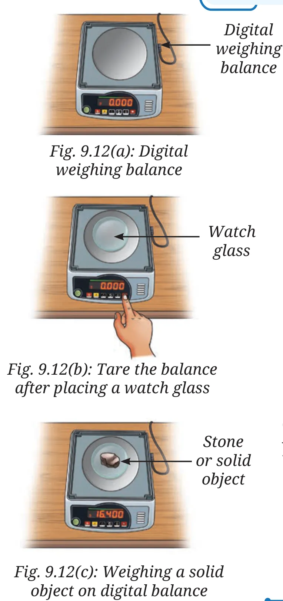
- Switch ON the balance. It should read zero. If not, press TARE (reset).
- Place a clean, dry watch glass (or butter paper) on the pan. Note the reading.
- Press TARE again: the reading becomes zero, so the watch glass is not counted.
- Gently place the object (a stone) on the watch glass.
- The reading is the mass of the stone, say 16.400 g.
What does "tare" mean?
Tare means "subtract the container". It makes the balance read zero with the container on it, so the display shows only the mass of what you add. For a liquid, place an empty beaker, tare, then pour in the liquid.
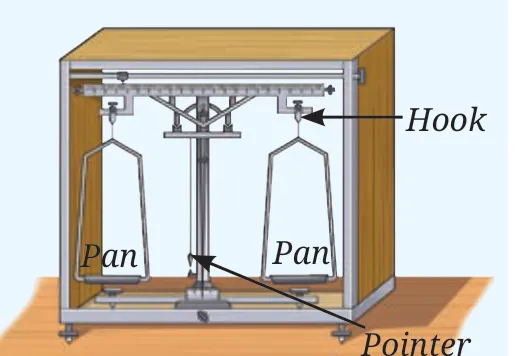
| Mass | Weight | |
|---|---|---|
| Meaning | Quantity of matter in an object | Force with which the Earth pulls the object |
| Unit | gram (g), kilogram (kg) | newton (N) |
| Changes on the Moon? | No | Yes (about 1/6) |
| Measured by | Two-pan balance (compares masses) | Spring balance; most digital balances measure weight but show it in g or kg |
Finding density, part 2: measuring volume
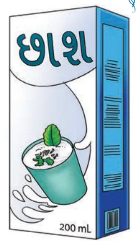
Volume is the space occupied by an object. A buttermilk pack marked 200 mL holds 200 millilitres of chhaas.
| Unit | Equal to |
|---|---|
| 1 m³ (SI unit) | a cube 1 m on each side = 1000 L |
| 1 L (litre) | 1 dm³ = 1000 mL |
| 1 mL (millilitre) | 1 cm³ = 1 cc |
The measuring cylinder
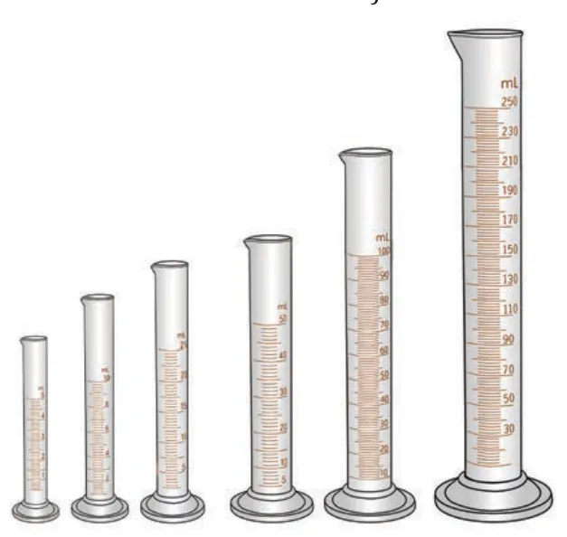
A narrow, transparent cylinder, open at one end and closed at the other, with markings (graduations) on the side. Sizes: 5, 10, 25, 50, 100, 250, 500 mL and more.
Why tall and narrow, not wide like a beaker?
In a narrow cylinder, even a small change in volume makes a big change in height. The marks are far apart, so we can read small volumes more accurately.
Activity 9.4: What can this cylinder measure?
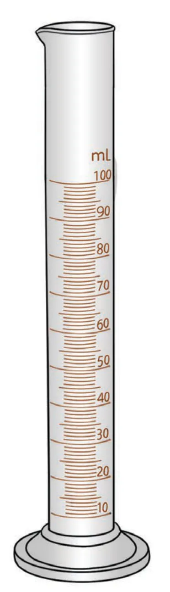
- Maximum volume it can measure: 100 mL (its capacity).
- Volume between two numbered marks (10 and 20 mL): 10 mL.
- Small divisions between them: 10.
- One small division = 10 ÷ 10 = 1 mL. This is the smallest volume it can read (its least count).
| Cylinder capacity | 10 mL or 25 mL | 100 mL | 250 mL | 500 mL |
|---|---|---|---|---|
| Usual smallest reading | 0.1 mL | 1 mL | 2 mL | 5 mL |
Which cylinder to measure 70 mL of water?
50 mL: cannot do it in one step (50 + 20, two steps, more chance of error). 250 or 500 mL: one step, but less accurate (smallest reading 2 or 5 mL). 100 mL: one step and accurate to 1 mL. Best choice: 100 mL. Rule: choose the smallest cylinder that can hold the whole volume in one go.
Activity 9.5: Measuring 50 mL of water, and the meniscus
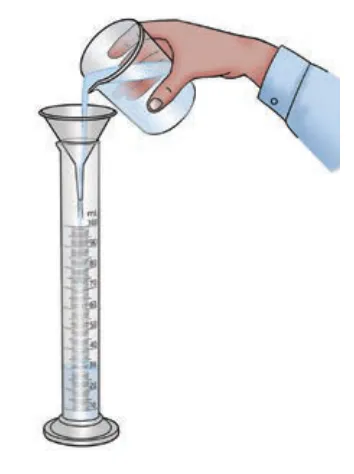
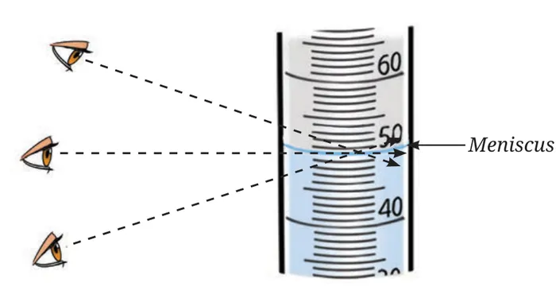
- Place a clean, dry cylinder on a flat surface.
- Pour water slowly up to near the mark. Adjust the last few drops with a dropper.
- The water surface is curved, not flat. This curved surface is the meniscus.
- Read the mark that touches the bottom of the meniscus for water and other colourless liquids.
- Keep your eye level with the bottom of the meniscus. Looking from above gives a reading that is too high; from below, too low (parallax error).
- For coloured liquids (you cannot see the bottom clearly), read the top of the meniscus.
📏 Live lab: Meniscus Reader
Choose a cylinder, pour water, then move your eye up and down. Read the scale exactly like the textbook says.
Activity 9.6: Volume of a regular solid
For a cuboid (notebook, shoe box, dice), measure length (l), width (w) and height (h) with a scale.
Volume = l × w × h
Notebook: 25 cm × 18 cm × 2 cm = 900 cm³.
Activity 9.7: Volume of an irregular solid (displacement method)
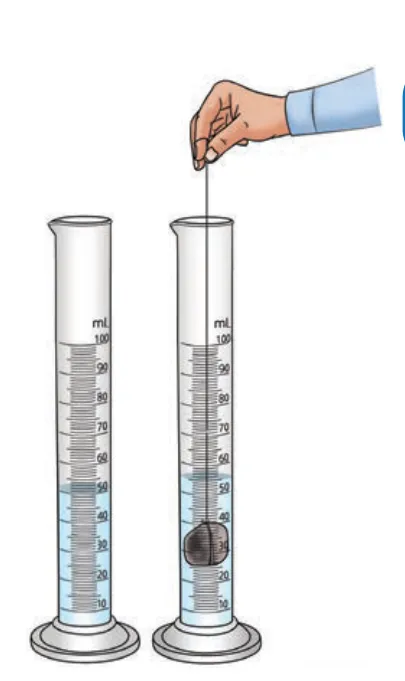
- Fill a measuring cylinder with water to a known level, say 50 mL (initial volume A).
- Tie the stone with a thread and lower it slowly into the water (so that no water splashes and the glass does not break).
- The level rises. Note the final volume, say 55 mL (B).
- Volume of stone = B − A = 55 − 50 = 5 mL = 5 cm³.
🧠 Why does this work?
Two things cannot be in the same place at the same time. The stone pushes away (displaces) water equal to its own volume, so the water rises by exactly that much. This works for any shape, as long as the object sinks fully and does not dissolve or soak up water.
Table 9.2 completed: volume of irregular solids (sample readings)
| S.No. | Object | Initial volume (A), mL | Final volume (B), mL | Water displaced (B − A), mL | Volume of object, cm³ |
|---|---|---|---|---|---|
| 1 | Stone | 50 | 55 | 5 | 5 |
| 2 | Metal key | 50 | 53 | 3 | 3 |
| 3 | Glass marble | 50 | 52 | 2 | 2 |
Rows 2 and 3 are sample values; your key or marble may give different readings. Note: volumes in mL can be written as cm³ for solids, since 1 mL = 1 cm³.
Finding density, part 3: calculate it
Stone: mass = 16.400 g (Activity 9.3), volume = 5 cm³ (Activity 9.7).
Density = Mass ÷ Volume = 16.400 g ÷ 5 cm³ = 3.28 g/cm³
3.28 > 1, so the stone sinks in water.
⚖️ Live lab: Density Detective (Activities 9.3 + 9.7)
Pick a mystery object. Weigh it on the digital balance (remember to tare!), find its volume by displacement, then work out what it is made of.
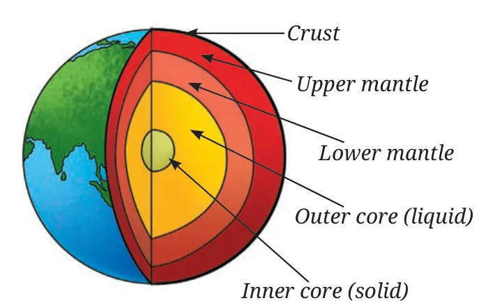
Let us dig deeper: a layered Earth
Earth has layers: crust, upper mantle, lower mantle, outer core (liquid) and inner core (solid). The crust is the lightest; density increases towards the centre, because pressure and temperature rise a lot as we go deeper, making materials heavier and more compact.
Approximate densities in g/cm³, for interest (not in the textbook).
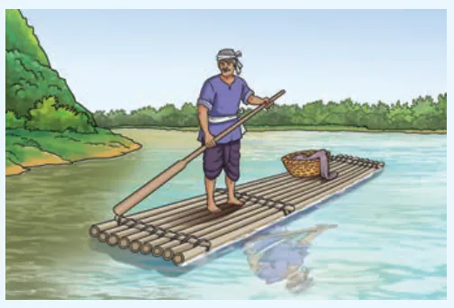
Ever heard of… bamboo rafts?
Before big ships, people crossed rivers and seas on bamboo rafts and hollowed-out wooden logs. Bamboo is light, hollow (filled with air) and floats easily, because its overall density is less than water. Such boats are still used in some regions, for transport and for tourists.
Effect of temperature on density
Generally, density decreases on heating and increases on cooling.
- Heat a substance (solid, liquid or gas)
- Particles move faster and spread apart
- Volume increases, mass stays the same
- Density = Mass ÷ Volume becomes smaller
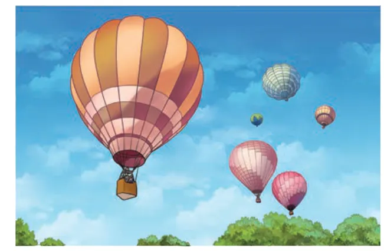
Hot air rises because it is less dense than the cooler air around it. A hot air balloon uses a burner to heat the air inside it; the hot, light air makes the balloon rise. When the pilot lets the air cool, the balloon comes down.
The same idea explains why smoke and the warm air above a stove rise, and why a room's upper part is warmer.
Effect of pressure on density
Gases big effect
Pressing a gas pushes particles closer. Volume goes down, density goes up. (Air in a cycle pump; CNG/LPG cylinders store a lot of gas in a small space.)
Liquids small effect
Liquids are nearly incompressible; their density changes very little.
Solids negligible
Particles are already very close; the change in density is usually negligible.
🎈 Live lab: Heat and Squeeze
Heat the air in the balloon, or squeeze the gas in the syringe. Watch the particles, the volume and the density.
Ever heard of… why ice floats on water
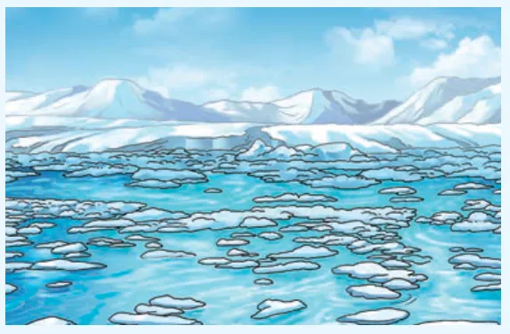
Most things shrink when they freeze. Water is special:
- Water is densest at 4 °C.
- When it freezes at 0 °C, its particles arrange in an open pattern that takes up more space (it expands).
- Same mass, larger volume → lower density (ice ≈ 0.92 g/cm³). So ice floats.
❄️ Live mini-lab: Frozen lake
Cool the air above a lake. Watch where the 4 °C water goes and where the ice forms.
This is very important for water animals. Ice forms a layer on top that acts like a blanket. The water below stays liquid (the bottom stays near 4 °C), so fish and other creatures survive even in extremely cold weather.
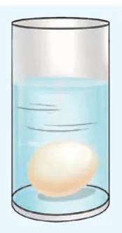
Think like a scientist: make the egg float
A raw egg sinks in tap water because it is denser than water. Dissolve lots of salt in the water and stir. Salt water is denser than plain water. Once its density is more than the egg's, the egg floats! Try it in the Float-or-Sink Tank below. Remember: density explains floating and sinking only partially; shape matters too.
🛁 Live lab: Float-or-Sink Tank
Choose the liquid, then drop objects in (up to 5 at a time). For salt water, slide the salt and watch the egg.
Mind map, snapshots and traps
📸 Snapshots (chapter summary)
- A solution forms when two or more substances mix to form a uniform mixture.
- Solid dissolved in a liquid: the solid is the solute, the liquid is the solvent.
- Two liquids mixed: the one in less quantity is the solute, the other is the solvent.
- Saturated solution: the maximum amount of solute is dissolved; no more can dissolve at that temperature.
- Unsaturated solution: more solute can still dissolve at that temperature.
- Solubility: the maximum amount of solute that can dissolve in a fixed quantity (100 mL) of solvent at a particular temperature.
- In liquids, solubility of solids increases and of gases decreases with a rise in temperature.
- Mass is the amount of matter in an object; volume is the space it occupies. Measured with a weighing balance and a measuring cylinder.
- Density = mass per unit volume (Mass ÷ Volume). Generally, density decreases when temperature increases; pressure affects density differently in different states.
🚫 Common mistakes
"In chashni, sugar is the solvent because there is more of it." Wrong
For a solid dissolved in a liquid, the liquid (water) is always the solvent.
"Sand and water is a solution." Wrong
It is a non-uniform mixture; sand settles and can be seen. Only uniform mixtures are solutions.
"Hot water holds more oxygen." Wrong
Gases dissolve less in warm water. Cold water holds more oxygen.
"Dilute means unsaturated, concentrated means saturated." Trap
Dilute/concentrated compare two solutions. Saturated/unsaturated tell whether more solute can dissolve. A concentrated solution can still be unsaturated.
"A bigger piece of iron has more density." Wrong
A bigger piece has more mass, but density (mass per unit volume) is the same, 7.9 g/cm³.
Reading the top of the meniscus for water Trap
Water and colourless liquids: read the bottom. Coloured liquids: read the top. Keep your eye level.
Writing "relative density = 2.7 g/cm³" Wrong
Relative density has no unit: write just 2.7.
"Density = Volume ÷ Mass" Wrong
Density = Mass ÷ Volume. Check: iron 600 g, 76 cm³ → 7.9 g/cm³ (a big number for a heavy metal).
Solution Arcade: 8 games
Play to learn. Every game gives you ⭐ stars, saved on this phone. Collect all 40 to become a Solution Superstar.
🛟 Game 1: Float or sink?
Compare the densities and predict. Watch the result in the mini tank. 10 rounds.
🧪 Game 2: Solute or solvent?
Read the solution and pick the part that is asked for. 10 rounds.
🥤 Game 3: Concentration duel
Which glass is more concentrated? Work it out per 100 mL. 8 rounds.
⚡ Game 4: Density dash
Find the density, mass or volume. 8 rounds.
📏 Game 5: Cylinder reader
Read the bottom of the meniscus (top for coloured liquids). Work out the smallest division first! 6 rounds.
🃏 Game 6: Memory match
Flip two cards. Match each word with its meaning or unit. Fewer moves, more stars.
⏱️ Game 7: Speed round
True or false? As many as you can in 60 seconds. A wrong answer costs 3 seconds.
🕵️ Game 8: Lab detective
Read the observation and find the conclusion, like a real scientist. 8 cases.
Exam pattern and answer-writing
📝 How Class 8 Science is tested
- There is no board exam in Class 8, so there are no CBSE board previous-year questions for this chapter. Your school's periodic tests, half-yearly and annual papers are set by the school.
- Most CBSE schools now use the same section pattern as the Class 9 and 10 board papers. The question bank below follows it: A MCQ and Assertion-Reason (1 mark), B very short answer (2 marks), C short answer (3 marks), D long answer (5 marks), E case-based (4 marks: 1 + 1 + 2).
- This chapter has many numericals (density, mass, volume, concentration). CBSE also likes competency-based questions: apply the idea to a kitchen, a pond, a shop label or a lab reading.
Numerical (2 or 3 marks)
Formula (½–1) + substitution with units (½–1) + answer with unit (½–1) + conclusion such as "sinks" (when asked).
3-mark theory
Three points, or definition + example + reason. Underline key words: saturated, solubility, meniscus.
5-mark activity
Aim + materials + steps + labelled diagram + observation + conclusion. Fig. 9.7 and Fig. 9.19 are the likely diagrams.
✍️ Marks-winning habits
- Always write the formula first: Density = Mass ÷ Volume. Then put values with units.
- Give the unit in the final answer (g/cm³, g/mL or kg/m³). Relative density: no unit.
- After finding density, compare with water (1 g/cm³) to say float or sink.
- For "concentrated" questions, convert both to the same volume first.
- For temperature questions, say clearly: solids ⬆, gases ⬇ with rise in temperature.
- For a measuring cylinder: least count = difference between numbered marks ÷ number of divisions.
Marks shown in green boxes in the question bank are a guide to how a CBSE-style school paper would split the marks, written by MT Classes (not from an official paper).
Question bank with answers
Every kind of question this chapter can be asked in a CBSE-style school exam. Tap a question to see the model answer. Green boxes show how marks are usually split.
Class 8 has no board exam, so there are no board previous-year questions (PYQs) for this chapter. These 100 questions are written by MT Classes in the CBSE pattern.
Section A: Multiple choice questions (1 mark each)
1.A uniform mixture of salt and water is called (a) a solvent (b) a solution (c) a solute (d) a suspension
(b) a solution. Salt is the solute and water is the solvent.
2.In sugar syrup (chashni), the solvent is (a) sugar (b) water (c) both (d) neither
(b) water. When a solid dissolves in a liquid, the liquid is always the solvent, even if there is more sugar.
3.Which of these is a non-uniform mixture? (a) ORS (b) Vinegar (c) Sawdust in water (d) Air
(c) Sawdust in water. The sawdust can be seen floating; it does not spread evenly.
4.In a solution of a little acetic acid in a lot of water, the solute is (a) water (b) acetic acid (c) both (d) neither
(b) acetic acid, because for two liquids, the one in smaller amount is the solute.
5.A solution in which no more solute can dissolve at a given temperature is (a) dilute (b) unsaturated (c) saturated (d) concentrated
(c) saturated.
6.A solution in which more solute can still be dissolved at that temperature is (a) saturated (b) unsaturated (c) non-uniform (d) pure
(b) unsaturated.
7.Solubility is the maximum amount of solute that dissolves in (a) any amount of solvent (b) a fixed amount of solvent at a given temperature (c) a fixed amount of solvent at any temperature (d) 1 litre of solution only
(b) a fixed amount of solvent (usually 100 mL or 100 g) at a given temperature.
8.On heating, the solubility of baking soda in water (a) increases (b) decreases (c) stays the same (d) becomes zero
(a) increases. Activity 9.2: more baking soda dissolves at 50 °C and even more at 70 °C.
9.On heating, the solubility of oxygen in water (a) increases (b) decreases (c) stays the same (d) first increases then decreases
(b) decreases. Gases dissolve less in warm water.
10.Fish get oxygen from (a) the water molecule itself (b) oxygen dissolved in water (c) carbon dioxide in water (d) salt in water
(b) oxygen dissolved in water.
11.The SI unit of density is (a) g/cm³ (b) kg/m³ (c) g/mL (d) kg/L
(b) kg/m³. g/cm³ and g/mL are also used, especially for liquids.
12.1 g/cm³ is equal to (a) 1 kg/m³ (b) 10 kg/m³ (c) 100 kg/m³ (d) 1000 kg/m³
(d) 1000 kg/m³.
13.Density of a substance does NOT depend on (a) temperature (b) pressure (c) its shape and size (d) the kind of substance
(c) its shape and size.
14.The density of water is about (a) 1 g/mL (b) 10 g/mL (c) 0.1 g/mL (d) 100 g/mL
(a) 1 g/mL (1 mL of water has a mass of about 1 g).
15.An object of mass 50 g and volume 25 cm³ has a density of (a) 0.5 g/cm³ (b) 2 g/cm³ (c) 75 g/cm³ (d) 1250 g/cm³
(b) 2 g/cm³. 50 ÷ 25 = 2.
16.The relative density of aluminium is 2.7. Its unit is (a) g/cm³ (b) kg/m³ (c) g/mL (d) it has no unit
(d) it has no unit. It is a ratio of two densities.
17.Mass is measured using (a) a measuring cylinder (b) a thermometer (c) a balance (d) a scale
(c) a balance.
18.The "tare" button of a digital balance is used to (a) switch it off (b) make the reading zero (c) double the reading (d) measure volume
(b) make the reading zero, for example after placing an empty watch glass or beaker.
19.Weight is measured in (a) gram (b) kilogram (c) newton (d) litre
(c) newton (N). Mass is measured in g or kg.
20.1 mL is equal to (a) 1 cm³ (b) 1 dm³ (c) 1 m³ (d) 1 L
(a) 1 cm³ (also called 1 cc).
21.In a measuring cylinder, the marks 40 mL and 50 mL have 5 small divisions between them. One division is (a) 1 mL (b) 2 mL (c) 5 mL (d) 10 mL
(b) 2 mL. (50 − 40) ÷ 5 = 2 mL.
22.To measure 70 mL of water accurately in one step, the best cylinder is (a) 50 mL (b) 100 mL (c) 250 mL (d) 500 mL
(b) 100 mL. One step and a smallest reading of 1 mL.
23.The curved surface of a liquid in a measuring cylinder is called (a) meniscus (b) magnitude (c) mercury (d) margin
(a) meniscus.
24.For water, the reading is taken at (a) the top of the meniscus (b) the bottom of the meniscus (c) the rim of the cylinder (d) any point
(b) the bottom of the meniscus, with the eye level with it.
25.Water level rises from 30 mL to 38 mL when a stone is lowered in. The volume of the stone is (a) 30 cm³ (b) 38 cm³ (c) 8 cm³ (d) 68 cm³
(c) 8 cm³ (38 − 30 = 8 mL = 8 cm³).
26.Water is densest at (a) 0 °C (b) 4 °C (c) 37 °C (d) 100 °C
(b) 4 °C.
27.Ice floats on water because (a) ice is heavier (b) ice is less dense than water (c) ice is hollow (d) water pushes air into ice
(b) When water freezes it expands, so ice has a lower density (about 0.92 g/cm³).
28.A hot air balloon rises because the air inside it is (a) denser than outside air (b) less dense than outside air (c) heavier (d) compressed
(b) less dense than outside air. Heating increases volume and lowers density.
29.Pressure has the greatest effect on the density of (a) solids (b) liquids (c) gases (d) all equally
(c) gases.
30.Which layer of the Earth is the least dense? (a) Inner core (b) Outer core (c) Mantle (d) Crust
(d) Crust. Density increases towards the centre.
31.Assertion (A): A saturated solution at 20 °C can become unsaturated on heating. Reason (R): Solubility of most solids increases with temperature. (a) Both A and R true, R explains A (b) Both true, R does not explain A (c) A true, R false (d) A false, R true
(a) Heating raises the solubility, so the same solution can now hold more solute.
32.Assertion (A): Fish in a warm pond may come to the surface to gulp air. Reason (R): Warm water holds less dissolved oxygen than cold water. (a) Both true, R explains A (b) Both true, R does not explain A (c) A true, R false (d) A false, R true
(a) Less dissolved oxygen in warm water makes fish come up for air.
33.Assertion (A): A big iron rod has a greater density than a small iron nail. Reason (R): Density depends on the size of an object. (a) Both true, R explains A (b) Both true, R does not explain A (c) A true, R false (d) Both A and R false
(d) Both A and R are false. Density does not depend on size; both have 7.9 g/cm³.
34.Assertion (A): Oil floats on water. Reason (R): The density of oil is less than that of water. (a) Both true, R explains A (b) Both true, R does not explain A (c) A true, R false (d) A false, R true
(a) Oil is about 0.91 g/mL; water is about 1 g/mL.
35.Assertion (A): Air is a solution. Reason (R): The gases in air are mixed uniformly. (a) Both true, R explains A (b) Both true, R does not explain A (c) A true, R false (d) A false, R true
(a) A uniform mixture is a solution, so air is a gaseous solution.
36.Assertion (A): A measuring cylinder is tall and narrow. Reason (R): A small change in volume then gives a large change in height, so readings are more accurate. (a) Both true, R explains A (b) Both true, R does not explain A (c) A true, R false (d) A false, R true
(a)
37.Assertion (A): Relative density of a substance has no unit. Reason (R): It is the ratio of two densities. (a) Both true, R explains A (b) Both true, R does not explain A (c) A true, R false (d) A false, R true
(a)
38.Assertion (A): Gases become denser when compressed. Reason (R): Compression decreases the mass of a gas. (a) Both true, R explains A (b) Both true, R does not explain A (c) A true, R false (d) A false, R true
(c) A is true. R is false: compression decreases the volume; mass stays the same.
Section B: Very short answer (2 marks each)
39.Define solute, solvent and solution with one example.
Solute: the substance that dissolves (salt) ½. Solvent: the substance in which it dissolves (water) ½. Solution: the uniform mixture formed (salt water) 1.
40.Differentiate between uniform and non-uniform mixtures with one example each.
Uniform: components evenly spread, cannot be seen separately, e.g. sugar in water 1. Non-uniform: components unevenly spread, can be seen, e.g. sand in water 1.
41.What is a saturated solution? How can you make it unsaturated without adding water?
A solution in which no more solute can dissolve at that temperature 1. Heat it: for most solids, solubility increases, so it becomes unsaturated 1.
42.Define concentration. Why are "dilute" and "concentrated" called relative terms?
Concentration is the amount of solute in a fixed quantity of solution or solvent 1. A solution is called dilute or concentrated only when compared with another solution of the same substances 1.
43.Which is more concentrated: 3 spoons of sugar in 150 mL water, or 2 spoons in 50 mL water? Show working.
Per 100 mL: first = 3 × 100/150 = 2 spoons ½; second = 2 × 100/50 = 4 spoons ½. So 2 spoons in 50 mL is more concentrated (twice as much) 1.
44.State the effect of temperature on the solubility of (a) solids and (b) gases in water.
(a) Solubility of most solids increases with temperature 1. (b) Solubility of gases decreases with temperature 1.
45.Why is sugar syrup (chashni) described with water as the solvent even though it has more sugar?
When a solid dissolves in a liquid, the solid is always the solute and the liquid the solvent 1. Sugar (solid) dissolves in water (liquid), so water is the solvent 1.
46.Define density and write its SI unit.
Density is the mass per unit volume of a substance (Density = Mass ÷ Volume) 1. SI unit: kg/m³ 1.
47.Find the density of a block of mass 120 g and volume 40 cm³. Will it float in water?
Density = 120 g ÷ 40 cm³ = 3 g/cm³ 1. 3 > 1 (water), so it sinks 1.
48.A liquid has density 0.8 g/mL. What is the mass of 250 mL of it?
Mass = Density × Volume ½ = 0.8 × 250 ½ = 200 g 1.
49.Convert (a) 2.7 g/cm³ to kg/m³ (b) 920 kg/m³ to g/cm³.
(a) 2.7 × 1000 = 2700 kg/m³ 1. (b) 920 ÷ 1000 = 0.92 g/cm³ 1.
50.What is relative density? Find the relative density of iron (density 7.9 g/cm³).
Relative density = density of substance ÷ density of water; it has no unit 1. For iron = 7.9 ÷ 1 = 7.9 1.
51.Distinguish between mass and weight (two points).
Mass is the quantity of matter; weight is the force with which the Earth pulls an object 1. Mass is measured in g or kg; weight in newtons (N) 1.
52.Why do we press the tare button after placing a watch glass on a digital balance?
Tare makes the reading zero with the watch glass on the pan 1, so the balance then shows only the mass of the object placed on it, not of the watch glass 1.
53.What is a meniscus? Where do you read it for water and for a coloured liquid?
The curved surface of a liquid in a narrow tube or cylinder 1. Water/colourless: bottom of the meniscus; coloured: top of the meniscus, with the eye at the same level 1.
54.Why should the eye be level with the meniscus while reading a measuring cylinder?
If the eye is above or below, the reading appears higher or lower than the true value (parallax error) 1. Eye level gives the correct reading 1.
55.Why is a 100 mL cylinder better than a 500 mL cylinder to measure 70 mL of water?
Both can measure it in one step ½, but the 100 mL cylinder reads to 1 mL while the 500 mL one reads only to 5 mL 1, so the 100 mL cylinder is more accurate ½.
56.How will you find the volume of a small irregular stone?
Pour water in a measuring cylinder and note the level A; lower the stone tied to a thread fully into the water and note level B 1. Volume of stone = B − A (in mL = cm³) 1.
57.Why does ice float on water?
When water freezes, its particles arrange so that they take up more space (it expands), so density decreases 1. Ice (about 0.92 g/cm³) is less dense than water, so it floats 1.
58.Why do hot air balloons rise?
Heating the air in the balloon makes its particles spread out, so its volume increases and density decreases 1. The balloon full of less dense hot air rises in the denser cool air around it 1.
59.Give one example each of a solution that is (a) gas in liquid (b) liquid in liquid.
(a) Soda water: carbon dioxide in water (or oxygen dissolved in pond water) 1. (b) Vinegar: acetic acid in water 1.
60.A notebook is 25 cm long, 18 cm wide and 2 cm thick. Find its volume.
Volume = l × w × h ½ = 25 × 18 × 2 ½ = 900 cm³ 1.
61.Why is the solubility of a substance always stated with a temperature?
Solubility changes with temperature (it rises for most solids and falls for gases) 1. So a value such as "36 g per 100 mL" is correct only at that temperature, e.g. 20 °C 1.
Section C: Short answer (3 marks each)
62.Describe Activity 9.1 and explain the terms saturated and unsaturated solution with its help.
Half-fill a tumbler with water; add salt one spoon at a time and stir till it dissolves; continue till some salt stays at the bottom 1. Before this stage, the solution can dissolve more salt: unsaturated 1. When salt stops dissolving and settles: saturated at that temperature 1.
63."Dilute and saturated are not opposites." Explain with an example.
Dilute/concentrated compare the amount of solute in two solutions 1. Saturated/unsaturated tell whether more solute can dissolve 1. Example: 5 spoons of sugar in 100 mL water is more concentrated than 1 spoon, but both are still unsaturated, because about 50 spoons (200 g) of sugar can dissolve in 100 mL 1.
64.Why do fish sometimes die in small ponds during very hot summers? Suggest two ways to help them.
Warm water holds less dissolved oxygen, so fish do not get enough oxygen 1½. Help: add cool fresh water, use an aerator or fountain to mix air into water, plant shade trees 1½.
65.A stone sculpture weighs 225 g and has a volume of 90 cm³. Find its density and relative density. Will it float?
Density = 225 ÷ 90 = 2.5 g/cm³ 1. Relative density = 2.5 ÷ 1 = 2.5 (no unit) 1. It is denser than water, so it sinks 1.
66.A block of iron has mass 600 g and density 7.9 g/cm³. Find its volume. If it is cut into two equal halves, what is the density of each half?
Volume = Mass ÷ Density = 600 ÷ 7.9 ≈ 75.9 cm³ 2. Each half still has density 7.9 g/cm³, because density does not depend on size 1.
67.A measuring cylinder has numbered marks 0, 20, 40, 60, 80, 100 mL and 10 small divisions between consecutive numbered marks. (a) Find its least count. (b) The water level is 4 divisions above the 60 mL mark. What is the reading?
(a) Least count = (20 − 0) ÷ 10 = 2 mL 1½. (b) Reading = 60 + 4 × 2 = 68 mL 1½.
68.Explain why density decreases when a substance is heated.
On heating, particles move faster and spread apart 1. Volume increases while mass stays the same 1. Since Density = Mass ÷ Volume, density decreases 1.
69.How does pressure affect the density of solids, liquids and gases?
Gases: particles are pushed closer, volume decreases, density increases noticeably 1. Liquids: nearly incompressible, so only a small change 1. Solids: particles already very close, change negligible 1.
70.A packet of oil says 1 litre, 910 g. (a) Find its density in g/mL and kg/m³. (b) Will it float on water?
(a) 910 g ÷ 1000 mL = 0.91 g/mL 1 = 910 kg/m³ 1. (b) Yes, it floats, because its density is less than water's (1 g/mL) 1.
71.An unpeeled orange floats but a peeled orange sinks. Explain.
The peel has many tiny air pockets, so the whole unpeeled orange has a low overall density, less than water 1½. Without the peel, the fruit's density is more than water's, so it sinks 1½.
72.How can you make a raw egg float in a glass of water? Explain the science.
Dissolve a lot of salt in the water and stir 1. Salt water is denser than plain water 1. When the salt water becomes denser than the egg, the egg floats 1.
73.Name the instrument used and the unit for measuring: (a) mass (b) volume of a liquid (c) volume of a cuboid.
(a) Balance; g or kg 1. (b) Measuring cylinder; mL or L 1. (c) Scale to measure l, w, h, then V = l × w × h; cm³ 1.
74.Describe the layers of the Earth in order of increasing density and give the reason for the change.
Crust → upper mantle → lower mantle → outer core (liquid) → inner core (solid) 2. Pressure and temperature rise a lot with depth, so materials become more compact and heavier 1.
75.A bottle has a capacity of 2 L. 500 mL of water is poured in. (a) How much more can it hold? (b) Express the answer in cm³ and dm³.
(a) 2 L = 2000 mL; 2000 − 500 = 1500 mL = 1.5 L 1½. (b) 1500 cm³ = 1.5 dm³ 1½.
76.Why is water called a universal solvent? Give two examples from daily life where we use water as a solvent.
Water dissolves a larger number of substances than any other common liquid 1. Examples: ORS/sharbat/tea, dissolving soap or detergent, Ayurvedic medicines made in water, plants taking dissolved minerals 2.
77.Explain why a 1 kg packet of cotton is much bigger than a 1 kg packet of sugar.
Both have the same mass (1 kg) 1. Cotton has a much lower density (it has lots of air spaces), so the same mass takes a much larger volume 1. Volume = Mass ÷ Density: lower density, larger volume 1.
78.Two objects: A (200 g, 40 cm³) and B (240 g, 60 cm³). Which is denser? Which one would float in a liquid of density 4.5 g/cm³?
A = 200 ÷ 40 = 5 g/cm³; B = 240 ÷ 60 = 4 g/cm³ 1. A is denser 1. In a liquid of 4.5 g/cm³, B floats (4 < 4.5) and A sinks 1.
79.Salt is collected at Ningel village in Manipur by boiling salty well water. Which property of solutions is used? Name the solute and solvent.
Evaporation: on boiling, the solvent turns into vapour and leaves the solute behind as crystals 1. Solute: salt 1. Solvent: water 1.
80.Mercury has a density of 13.6 g/cm³. Find (a) the mass of 10 mL of mercury (b) the volume of 272 g of mercury.
(a) Mass = 13.6 × 10 = 136 g 1½. (b) Volume = 272 ÷ 13.6 = 20 cm³ 1½.
81.Reema moulds 120 g of clay into a cube of 60 cm³ and then flattens it into a sheet. Find the density in both cases and explain.
Cube: 120 ÷ 60 = 2 g/cm³ 1. Sheet: mass is still 120 g and the amount of clay (volume) is still 60 cm³, so density is still 2 g/cm³ 1. Changing shape does not change density 1.
Section D: Long answer (5 marks each)
82.Describe Activity 9.2 with a labelled diagram. What do you observe at 20 °C, 50 °C and 70 °C? What do you conclude?
Diagram 1: beaker of water with baking soda on wire gauze and tripod stand, spirit lamp below, laboratory thermometer held by a stand, glass rod (Fig. 9.7). Steps 1½: take 50 mL water at 20 °C, add baking soda while stirring till some stays undissolved; heat to 50 °C, stir; add more till undissolved; heat to 70 °C. Observations 1½: at 50 °C the leftover baking soda dissolves; at 70 °C the new leftover dissolves too. Conclusion 1: solubility of most solids increases with temperature; a saturated solution becomes unsaturated on heating.
83.Explain how you will find the density of a small stone in the lab. Include the instruments, steps, a sample calculation and precautions.
Mass 1½: switch on the digital balance, place a watch glass, press tare, place the stone; read the mass, e.g. 16.400 g. Volume 1½: fill a measuring cylinder to 50 mL; lower the stone on a thread; level rises to 55 mL; volume = 5 cm³. Calculation 1: Density = 16.400 ÷ 5 = 3.28 g/cm³. Precautions 1: balance should read zero, read the bottom of the meniscus at eye level, lower the stone gently, stone must be fully under water, no air bubbles stuck to it.
84.(a) What is a measuring cylinder? Why is it tall and narrow? (b) How do you find its least count? (c) Which cylinder would you choose for 70 mL water and why? (d) How do you read the level correctly?
(a) A narrow transparent graduated cylinder, open at the top; narrow so a small volume change gives a big height change, improving accuracy 1½. (b) Difference between two numbered marks ÷ number of divisions between them, e.g. 10 ÷ 10 = 1 mL 1. (c) 100 mL: one step and accurate to 1 mL; 50 mL needs two steps, 250/500 mL are less accurate 1½. (d) Keep it on a flat surface, eye level with the bottom of the meniscus (top for coloured liquids) 1.
85.(a) Define solubility. (b) How does temperature affect the solubility of solids and gases? Give one daily-life example of each. (c) Why does a cold soft drink bottle fizz less when opened than a warm one?
(a) Maximum amount of solute that dissolves in a fixed quantity of solvent (100 mL) at a given temperature 1. (b) Solids: increases with temperature, e.g. more sugar dissolves in hot tea 1½; gases: decreases, e.g. warm ponds hold less oxygen 1½. (c) Cold water holds more dissolved CO₂, so less gas escapes; warm water holds less, so the extra gas rushes out as fizz 1.
86.(a) Define density and relative density. (b) Why does ice float on water? (c) Why is this important for aquatic life? (d) A 50 cm³ block has mass 46 g. Will it float?
(a) Density = mass per unit volume; relative density = density of substance ÷ density of water, no unit 1½. (b) Water expands on freezing; ice is less dense (about 0.92 g/cm³) 1. (c) Ice forms a layer on top that insulates; water below stays liquid near 4 °C, so fish survive 1½. (d) 46 ÷ 50 = 0.92 g/cm³ < 1, so it floats 1.
Section E: Case-based questions (4 marks each: 1 + 1 + 2)
87.Case 1: Meena made ORS by dissolving 1 spoon of sugar and a pinch of salt in a glass of water. Her brother made another with 4 spoons of sugar in half a glass of water. (i) Name the solvent in ORS. (ii) Is ORS a uniform or non-uniform mixture? (iii) Whose solution is more concentrated? By how many times? Show working.
(i) Water 1. (ii) Uniform mixture, a solution: every sip tastes the same 1. (iii) Brother's: 4 spoons in half a glass = 8 spoons per glass, versus Meena's 1 spoon per glass 1. So the brother's is 8 times more concentrated 1.
88.Case 2: In a lab, Ravi's measuring cylinder had numbered marks every 10 mL with 5 divisions between them. He filled water to 40 mL and lowered a metal key on a thread. The water rose by 3 divisions. The key's mass was 25.2 g. (i) Find the least count. (ii) Find the volume of the key. (iii) Find its density. Will it float in water?
(i) 10 ÷ 5 = 2 mL 1. (ii) 3 × 2 = 6 mL = 6 cm³ 1. (iii) 25.2 ÷ 6 = 4.2 g/cm³ 1; more than 1 g/cm³, so it sinks 1.
89.Case 3: A fish farmer in Motihari noticed fish gathering near the surface of his pond on a hot May afternoon. At dawn the next day, when the water was cool, the fish were swimming deep again. (i) What is dissolved in water that fish breathe? (ii) Why did the fish come to the surface in the afternoon? (iii) Suggest two ways the farmer can help the fish.
(i) Oxygen 1. (ii) Warm water holds less dissolved oxygen, so the fish came up to gulp air 1. (iii) Run an aerator or fountain to dissolve more air; add cool fresh water; give shade; avoid overcrowding 2.
90.Case 4: Neha poured honey, water and cooking oil into a tall glass. They formed three layers. She then dropped a plastic bead (density 1.2 g/cm³) and a small cork. Densities: honey 1.4, water 1.0, oil 0.91 g/cm³. (i) Which liquid forms the top layer? (ii) Where will the cork be? (iii) Where will the bead settle and why?
(i) Oil, the least dense 1. (ii) Cork floats on top of the oil (it is the least dense, about 0.24 g/cm³) 1. (iii) Between the water and honey layers: it sinks through oil and water (1.2 > 1.0 and 0.91) but floats on honey (1.2 < 1.4) 2.
HOTS and competency-based (think harder)
91.Why does a steel ship float even though steel (7.9 g/cm³) is much denser than water?
A ship is hollow and full of air. Its overall density (total mass ÷ total volume, including the air inside) is less than water. That is why the book says density is not the only factor; shape matters too.
92.People float easily in the Dead Sea. Why? Why is there no fish there?
The Dead Sea has so much salt dissolved (about 34%) that its water is much denser than ordinary water (about 1.24 g/cm³), more than the human body, so people float. The water is far too salty for fish and most living things; only some microbes survive.
93.A saturated sugar solution at 60 °C is cooled to 20 °C. What will you see? Why?
Sugar crystals appear at the bottom. Solubility of sugar is lower at 20 °C, so the extra sugar that the warm water was holding comes out as solid.
94.Kerosene (0.8 g/cm³) and water are poured into a glass. Which forms the top layer? If a candle (wax, 0.9 g/cm³) is dropped in, where will it stay?
Kerosene forms the top layer. The wax (0.9) sinks through kerosene (0.8) but floats on water (1.0), so it stays at the boundary between the two liquids.
95.Gold has density 19.3 g/cm³. What is the mass of a gold coin of volume 2 cm³? Why is gold jewellery checked by density?
Mass = 19.3 × 2 = 38.6 g. Each pure substance has its own density, so a jeweller can find the density of an ornament; if it is much lower than 19.3, other cheaper metals are mixed in.
96.Why do we feel the upper bunk in a train or the ceiling of a room warmer in summer?
Warm air is less dense, so it rises and collects near the ceiling; cooler, denser air stays near the floor.
97.Air density is about 1.2 kg/m³. Find the mass of air in a classroom 10 m × 8 m × 4 m.
Volume = 10 × 8 × 4 = 320 m³. Mass = 1.2 × 320 = 384 kg. Air has a lot of mass in a big room!
98.A student reads a measuring cylinder by looking from above. Will the reading be more or less than the actual volume?
More than the actual volume (the line of sight from above meets the scale at a higher mark). Always keep the eye level with the bottom of the meniscus.
99.Two glasses of salt solution look exactly the same. Suggest two ways to find which is more concentrated without tasting.
(1) Evaporate equal volumes and weigh the salt left: more salt = more concentrated. (2) Find the density: weigh equal volumes (say 100 mL); the heavier one has more salt dissolved. (3) Put an egg or a test object in each: it floats higher in the more concentrated one.
100.Why should you not use a measuring cylinder to find the volume of a sugar cube by displacement in water? Suggest a better liquid.
Sugar dissolves in water, so the cube would shrink and the reading would be wrong. Use a liquid in which sugar does not dissolve, such as cooking oil or kerosene.
Test yourself
Tap an answer. You see the right answer and the reason at once.
1. ORS tastes the same in every sip because it is a
Sugar and salt are spread evenly.
2. In salt water, salt is the
Salt dissolves; water does the dissolving.
3. Which is NOT a solution?
Chalk particles can be seen and settle: a non-uniform mixture.
4. Undissolved salt settles at the bottom. The solution is
No more salt can dissolve at that temperature.
5. Most solids dissolve more when water is
Solubility of most solids increases with temperature.
6. Oxygen dissolves more in
Gas solubility decreases as temperature rises.
7. More concentrated: 2 spoons in 100 mL or 4 spoons in 50 mL?
4 in 50 mL = 8 per 100 mL.
8. Density =
Mass per unit volume.
9. SI unit of density
SI units: kg for mass, m³ for volume.
10. 27 g of aluminium has a volume of 10 cm³. Its density is
27 ÷ 10 = 2.7.
11. Relative density of a substance has
It is a ratio of two densities.
12. 1 litre of oil weighs 910 g. The oil is
0.91 g/mL is less than 1 g/mL.
13. A balance's TARE button
So the container's mass is not counted.
14. Weight is measured in
Weight is a force.
15. Numbered marks 10 mL apart with 10 divisions between: one division is
10 ÷ 10 = 1 mL.
16. For water, read the
Top is for coloured liquids.
17. Water rises from 50 mL to 55 mL when a stone is put in. Volume of stone:
Displacement: 55 − 50 = 5.
18. Water has its highest density at
So ice (0 °C) floats.
19. On heating, the density of a gas
Volume increases, mass stays the same.
20. The densest layer of the Earth is the
Density increases towards the centre.
All textbook questions answered
Keep the curiosity alive (pages 149 to 151)
Q1.State whether True [T] or False [F]. Correct the false statements. (i) Oxygen gas is more soluble in hot water rather than in cold water. (ii) A mixture of sand and water is a solution. (iii) The amount of space occupied by any object is called its mass. (iv) An unsaturated solution has more solute dissolved than a saturated solution. (v) The presence of different gases in the atmosphere is also a uniform mixture.
- False. Oxygen is more soluble in cold water than in hot water.
- False. Sand and water is a non-uniform mixture, not a solution (sand settles and can be seen).
- False. The space occupied by an object is its volume. (Mass is the quantity of matter.)
- False. An unsaturated solution has less solute dissolved than a saturated solution (at the same temperature).
- True. The gases of the atmosphere are evenly mixed: air is a uniform mixture (a solution).
Q2.Fill in the blanks. (i) The volume of a solid can be measured by the method of displacement, where the solid is ____ in water and the ____ in water level is measured. (ii) The maximum amount of ____ dissolved in ____ at a particular temperature is called solubility at that temperature. (iii) Generally, the density ____ with increase in temperature. (iv) The solution in which glucose has completely dissolved in water, and no more glucose can dissolve at a given temperature, is called a ____ solution of glucose.
- immersed (fully dipped); rise
- solute; a fixed quantity (100 mL) of solvent
- decreases
- saturated
Q3.You pour oil into a glass containing some water. The oil floats on top. What does this tell you? (i) Oil is denser than water (ii) Water is denser than oil (iii) Oil and water have the same density (iv) Oil dissolves in water
(ii) Water is denser than oil. A less dense liquid floats on a denser one. (Oil ≈ 0.91 g/mL, water ≈ 1 g/mL.) Oil does not dissolve in water; it forms a separate layer.
Q4.A stone sculpture weighs 225 g and has a volume of 90 cm³. Calculate its density and predict whether it will float or sink in water.
Density = Mass ÷ Volume = 225 g ÷ 90 cm³ = 2.5 g/cm³.
Density of water = 1 g/cm³. Since 2.5 > 1, the sculpture is denser than water and will sink.
Q5.Which one is the most appropriate statement, and why are the others not appropriate? (i) A saturated solution can still dissolve more solute at a given temperature. (ii) An unsaturated solution has dissolved the maximum amount of solute possible at a given temperature. (iii) No more solute can be dissolved into the saturated solution at that temperature. (iv) A saturated solution forms only at high temperatures.
(iii) is correct. That is the definition of a saturated solution.
- (i) is wrong: that describes an unsaturated solution.
- (ii) is wrong: having the maximum amount dissolved is the saturated solution.
- (iv) is wrong: a solution can become saturated at any temperature (in Activity 9.2 it was saturated even at 20 °C); the amount needed just changes with temperature.
Q6.You have a bottle with a volume of 2 litres. You pour 500 mL of water into it. How much more water can the bottle hold?
2 L = 2 × 1000 mL = 2000 mL. Space left = 2000 mL − 500 mL = 1500 mL (1.5 L).
Q7.An object has a mass of 400 g and a volume of 40 cm³. What is its density?
Density = 400 g ÷ 40 cm³ = 10 g/cm³ (= 10,000 kg/m³). It is much denser than water, so it would sink.
Q8.Analyse Fig. 9.25 (a) and (b). Why does the unpeeled orange float, while the peeled one sinks? Explain.
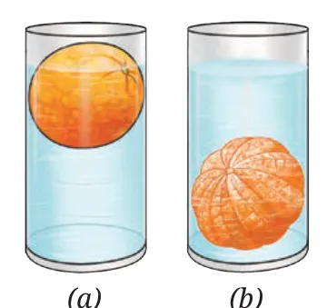
The orange peel is thick and spongy, full of tiny air pockets. With the peel on, the whole orange has a large volume for its mass, so its overall density is less than water: it floats (the peel acts like a life jacket).
When the peel is removed, the air pockets go too. The juicy fruit inside is denser than water, so it sinks.
Q9.Object A has a mass of 200 g and a volume of 40 cm³. Object B has a mass of 240 g and a volume of 60 cm³. Which object is denser?
Density of A = 200 ÷ 40 = 5 g/cm³. Density of B = 240 ÷ 60 = 4 g/cm³.
Object A is denser, even though B has more mass. (Both sink in water.)
Q10.Reema has a piece of modelling clay that weighs 120 g. She first moulds it into a compact cube of volume 60 cm³. Later, she flattens it into a thin sheet. Predict what will happen to its density.
Density of the cube = 120 g ÷ 60 cm³ = 2 g/cm³.
Flattening changes only the shape. The mass (120 g) and the amount of clay, its volume (60 cm³), stay the same. So the density stays 2 g/cm³. Density does not depend on shape or size.
Q11.A block of iron has a mass of 600 g and a density of 7.9 g/cm³. What is its volume?
Volume = Mass ÷ Density = 600 g ÷ 7.9 g/cm³ ≈ 75.9 cm³ (about 76 cm³).
Q12.Fig. 9.26: a test tube full of water with a narrow glass tube through its stopper is kept in a beaker of hot water (about 70 °C). The water level in the glass tube rises. How does it affect the density?
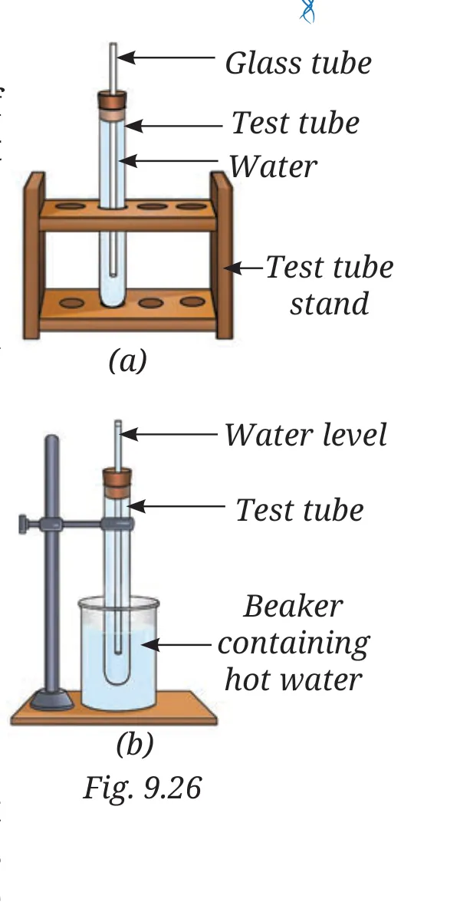
On heating, water particles move faster and spread apart, so the water expands: its volume increases and it rises up the narrow tube. The mass stays the same (no water is added or removed).
Since Density = Mass ÷ Volume, a larger volume with the same mass means the density of water decreases on heating.
In-text questions
P1.Can you predict whether the mixture of sugar, salt and water (Fig. 9.1) is uniform? What happens when chalk powder is mixed with water? (page 135)
Sugar + salt + water is uniform (a solution). Chalk powder + water is non-uniform: the water turns cloudy and the chalk slowly settles.
P2.Would a mixture of gases also be considered a solution? (page 135)
Yes. Gases mix evenly, so a mixture of gases like air is a uniform mixture, a gaseous solution.
P3.Activity 9.1 discussion: How many spoons dissolved? What does this show about water's capacity to dissolve salt? (page 136)
About 5 to 6 spoons in half a glass (about 100 mL) at room temperature, then some stayed undissolved. It shows that a fixed amount of water can dissolve only a limited amount of salt at a given temperature; after that the solution is saturated.
P4.Which is more concentrated: 2 spoons of salt in 100 mL of water or 4 spoons of salt in 50 mL of water? (page 137)
4 spoons in 50 mL = 8 spoons in 100 mL. So 4 spoons in 50 mL is more concentrated (4 times).
P5.Activity 9.2: What happens to the undissolved baking soda on heating? What do you infer? (page 138)
It dissolves. Water at higher temperature dissolves more baking soda: solubility of most solids increases with temperature.
P6.Is the mixture of gases in water uniform or non-uniform? (page 139)
Uniform, because the gases dissolve evenly in water.
P7.Why does sawdust float while sand sinks in water? (page 139)
Sawdust is less dense than water, so it floats. Sand is denser than water (about 2.6 g/cm³), so it sinks.
P8.Think like a scientist: a 1 litre packet of oil weighs only 910 g. What does this tell us about the density of oil? (page 141)
Density of oil = 910 g ÷ 1000 mL = 0.91 g/mL, which is less than that of water (1 g/mL).
P9.Activity 9.4: The maximum volume and the smallest volume the 100 mL cylinder (Fig. 9.16) can measure. (page 144)
Maximum: 100 mL. Between 10 and 20 mL there are 10 divisions, so the smallest reading = 10 ÷ 10 = 1 mL.
P10.Why are measuring cylinders narrow and tall instead of wide and short like a beaker? (page 144)
In a narrow cylinder, a small change in volume gives a large change in height, so the markings are spaced further apart and the volume can be read more accurately.
P11.How is the level of a coloured liquid measured? (page 145)
The mark that coincides with the top of the meniscus is read, with the eye at the same level.
P12.Think like a scientist (Fig. 9.24): What change can you make to make the egg float in water instead of sinking? (page 148)
Dissolve plenty of salt in the water. The salt solution becomes denser than the egg, so the egg floats.
Discover, design and debate (project ideas)
- Dead Sea research: It is so salty (about a third of its mass is salt) that fish and plants cannot live in it; only some microbes survive. It is so dense that people float without effort. Other very salty water bodies: the Great Salt Lake (USA), Lake Assal (Djibouti) and Don Juan Pond (Antarctica). In India, Sambhar Lake (Rajasthan) is a large salt lake.
- Salt in different solvents: take 50 mL each of water, vinegar and cooking oil; add salt a pinch at a time with stirring. Expected result: dissolves well in water, a little less in vinegar (it is mostly water), and practically not at all in oil.
- Debate: is water truly the most versatile solvent? For: it dissolves more substances than any other common liquid, carries nutrients in blood and plants, and is safe and cheap. Against: it cannot dissolve oil, grease, paint or nail polish; for these we use kerosene, turpentine, acetone or alcohol. Conclusion: water is the most versatile everyday solvent, but not universal for every substance.
🇮🇳 Our scientific heritage: the salt of Ningel
In Ningel village (Thoubal district, Manipur), salt is still made in the traditional way. Salty water is drawn from salt wells (one is lined with a 100-year-old tree trunk). Families, mostly women, boil the salt solution in large metal pans over firewood kilns. The water evaporates and salt crystals form, which are shaped into round salt cakes with banana leaves and wrapped in a traditional cloth (phanek). Science behind it: evaporating the solvent leaves the solute behind, the same idea as the Salt March picture at the start of this chapter.